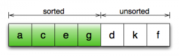
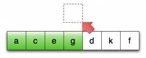
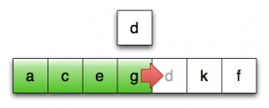
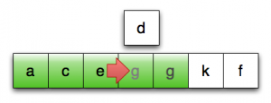
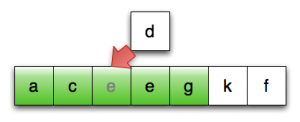

September 11th, 2009 by Dave Abrahams
Move It With Rvalue References
This is the second article in a series about efficient
value types in C++. In the previous
installment,
we discussed how copy elision can be leveraged to eliminate many
copies we might otherwise make. Copy elision is transparent, happens
automatically in natural-looking code, and has almost no downside. So
much for the good news; here’s the bad:
Copy elision isn’t mandated by standard, so you can’t write
portable code with the assurance that it will take effect.
Sometimes it can’t be done. For example, in
the callee can use the memory area passed from the caller for at
most one of var1 or var2. If it chooses to store var1
in that area and q turns out to be false, var2 still
needs to be copied (and vice-versa).There are still many opportunities for copy elimination that
lie beyond the reach of compilers’ stack allocation tricks.
Slow Shuffle
Many of these other opportunities for optimization occur up when an
operation is fundamentally concerned with rearranging data. Take for
example a simple generic insertion sort:1
template <class Iter>
void insertion_sort(Iter first, Iter last)
{
if (first == last) return;
Iter i = first;
while (++i != last) // Invariant: elements preceding i are sorted
{
Iter next = i, prev = i;
if (*--prev > *i)
{
typename std::iterator_traits<Iter>::value_type x(*next);
do *next = *prev;
while(--next != first && *--prev > x);
*next = x;
}
}
}

Line 7: Outer Loop Invariant

Line 12: copy first unsorted element to temp location

Line 13: copy last sorted element forward

Line 13: keep copying forward until position found

Line 15: assign temp into position
Now consider what happens when sorting a sequence of whose elements
are std::vector<std::string>s: in lines 12, 13, and 15, we
potentially copy a vector of strings, which involves lots of memory
allocations and data copying.
Because a sort is a fundamentally data-conserving operation, though,
these costs should be avoidable: all we really need to do in
principle is to shuffle the objects around in the sequence.
The key thing to notice about these expensive copies is that, in all
cases, the value of the source object will never be used again. Sound
familiar? Yep, that’s the case when the source is an rvalue, too. In
this case, however, the sources are lvalues: objects with known
addresses.
What About Reference-Counting?
One popular way to address these inefficiencies is to allocate the
elements on the heap and use sequences of reference-counted smart
pointers to elements, rather than storing the elements directly. A
reference-counted smart pointer is just like a regular pointer, except
that it keeps track of how many other reference-counted smart pointers
are referencing the object, and deletes the object when the last one
goes away. Copying a reference-counted pointer just increments a
reference count, and is very fast. Assigning a reference counted
increments one reference count and decrements another. It is also
very fast.
So, what could be faster? Not counting at all, of course! Also,
reference counting has other drawbacks we’d like to avoid:
- It can actually be expensive in a multithreaded environment, since
the count itself may be shared across threads, thus requiring
synchronization.
- The approach breaks down in generic code, where the element type
might end up being a lightweight type like
int. In that case,
the addition of reference counting can actually be a significant
efficiency cost. You either end up paying that cost, or you have
to introduce a complicated framework for deciding which types are
lightweight enough to store directly and for accessing the values
in a uniform manner.
Reference semantics make code harder to
understand.
For example:
typedef std::vector<std::shared_ptr<std::string> > svec;
…
svec s2 = s1;
std::for_each( s2.begin(), s2.end(), to_uppercase() );
The upper-casing of s2 also modifies the apparent value of s1.
This is a bigger subject than we can treat fully here, but in
short, when data sharing is hidden, seemingly-local modifications
don’t necessarily have purely local effects.
Introducing C++0x Rvalue References
To help us solve these problems, C++0x introduces a new kind of reference, the
rvalue reference. An rvalue reference to T is spelled T&&
(pronounced “tee ref-ref”), and we now call regular T& references
“lvalue references.” The main difference between lvalue and rvalue
references for our purposes is that non-const rvalue references can
bind to rvalues. Most C++ programmers have encountered an error
message like this one at some point:
invalid initialization of non-const reference of type 'X&'
from a temporary of type 'X'
Such a message usually results from code like
X f(); // call to f yields an rvalue
int g(X&);
int x = g( f() ); // error
The rules say that a non-const (lvalue) reference will bind to an
lvalue, but not to a temporary (i.e. to an rvalue). It makes
sense in a way, because any modifications made to the temporary
through that reference are sure to be lost. 2 By contrast, a
non-const rvalue reference will bind to a temporary, but not an
lvalue:
X f();
X a;
int g(X&&);
int b = g( f() ); // OK
int c = g( a ); // ERROR: can't bind rvalue reference to an lvalue
Stealing Resources
Let’s say our function g() has to store a copy of its argument
for later use.
static X cache;
int g(X&& a)
{
cache = a; // keep it for later
}
int b = g( X() ); // call g with a temporarySince g()‘s parameter is an rvalue reference, we know that it will
automatically bind only to unnamed temporaries, and nothing else. 3
Therefore,
- Shortly after we copy this temporary into
cache, the source of
the copy will be destroyed.
- Any modifications we might make to the temporary will be
invisible to the rest of the program.
That gives us the ability to perform new kinds of optimizations that
avoid work by mutating the value of the temporary. The most common
optimization of this kind is resource stealing.
Resource stealing means taking the resources (e.g., memory,
large subobjects) from one object and transferring them to
another. For example, a String class might have ownership over a
buffer of characters allocated on the heap. Copying a String
involves allocating a new buffer and copying all of the characters
into that new buffer, which is likely to be slow. Stealing from the
String, however, requires only that another object take the
String‘s buffer and notify the original (source) string that it no
longer has a valid buffer—a far more efficient operation. Using
rvalue references, we can optimize our code by changing copying from a
temporary into stealing from the temporary. And, since only the
temporary is affected, this optimization is logically non-mutating.
Insight:
Stealing from (or otherwise modifying) an rvalue reference
should be considered a logically non-mutating operation
The Rvalue Overloading Idiom
This insight makes possible a new semantics-preserving program
transformation: we can overload any function that takes a (const)
reference parameter with another that takes an rvalue reference
parameter in the same position:
void g(X const& a) { … } // doesn't mutate argument
void g(X&& a) { modify(a); } // new overload; logically non-mutatingThe second overload of g can modify its argument without changing the
meaning of the rest of the program as long as it otherwise has the
same semantics as the first overload.
Binding And Overloading
The complete C++0x rules for reference binding and overload resolution are summarized in the table below:
Expression→
Reference Type↓ |
T
rvalue |
const T
rvalue |
T
lvalue |
const T
lvalue |
Priority |
T&& |
X |
|
|
|
4 |
const T&& |
X |
X |
|
|
3 |
T& |
|
|
X |
|
2 |
const T& |
X |
X |
X |
X |
1 |
The “Priority” column describes how these references behave with respect
to overload resolution. For example, given the following overload set:
void f(int&&); // #1
void f(const int&&); // #2
void f(const int&); // #3
const int to f will invoke overload #2,
because overload #1 represents a disallowed binding and #3 appears in
a row with lower priority.
Declaring a Movable Type
We can use this idiom to make rvalues of any type implicitly movable
using two new operations, move construction and move
assignment, that take rvalue reference arguments. For example, a
movable std::vector might look like this in C++0x:
template <class T, class A>
struct vector
{
vector(vector const& lvalue); // copy constructor
vector& operator=(vector const& lvalue); // copy assignment operator
vector(vector&& rvalue); // move constructor
vector& operator=(vector&& rvalue); // move assignment operator
…
};
It’s the job of a move constructor or assignment operator to “steal”
resources from its argument, leaving that argument in a destructible
and assignable state.4
In the case of std::vector, that probably means returning the
argument to its empty state. A typical implementation of
std::vector contains three pointers: one to the beginning of
allocated storage, another that points to the the end of the elements
in the vector, and a third that points to the end of allocated
storage. So, assuming these pointers are all null when the vector is
empty, the move constructor might look something like this:
vector(vector&& rhs)
: start(rhs.start) // adopt rhs's storage
, elements_end(rhs.elements_end)
, storage_end(rhs.storage_end)
{ // mark rhs as empty.
rhs.start = rhs.elements_end = rhs.storage_end = 0;
}
And the move assignment operator might go this way:
vector& operator=(vector&& rhs)
{
std::swap(*this, rhs);
return *this;
}Since the rvalue argument is going to be destroyed anyway, swapping
not only acquires its resources but essentially “schedules” our
current resources for later destruction.
Note:
Don’t get too comfortable yet; this move assignment operator
is still not quite right.
Rvalue References and Copy Elision
Move construction of std::vector is extremely cheap (approximately
3 loads and 6 stores to memory), but it’s not free. Fortunately, the
standard is written so that copy elision (which is truly free) can
take priority over move operations. When you pass an rvalue by value,
or return anything by value from a function, the compiler first gets
the option to elide the copy. If the copy isn’t elided, but the type
in question has a move constructor, the compiler is required to use
the move constructor. Lastly, if there’s no move constructor, the
compiler falls back to using the copy constructor.
For example:
A compute(…)
{
A v;
…
return v;
}
- If
A has an accessible copy or move constructor, the compiler may choose to elide the copy
- otherwise, if
A has a move constructor, v is moved
- otherwise, if
A has a copy constructor, v is copied
- otherwise, a compile time error is emitted.
Therefore, the guideline from the previous article still applies:
Guideline
Don’t copy your function arguments. Instead, pass them
by value and let the compiler do the copying.
In light of the above guideline, you may now be asking yourself, “aside
from move constructors and assignment operators, where would I use the
rvalue overloading idiom? Once all my types are movable, what is
left to be done?” Examples follow.
Moving From Lvalues
All these move optimizations have one thing in common: they occur when
we’re through using the source object. Sometimes, though, we need to
give the compiler a hint. For example:
1
2
3
4
5
6
7
8
9
| void g(X);
void f()
{
X b;
g(b);
…
g(b);
} |
In line 8, we call g with an lvalue, which is ineligible for
resource-stealing—even though we’re never going to use b again.
To tell the compiler that it can move from b, we can pass it through
std::move:
1
2
3
4
5
6
7
8
9
| void g(X);
void f()
{
X b;
g(b); // still need the value of b
…
g( std::move(b) ); // all done with b now; grant permission to move
} |
Note that std::move doesn’t itself do any moving. It merely
converts its argument into an rvalue reference so that move
optimizations can kick in if it is used in a “move-optimized”
context. When you see std::move, you should think: “grant
permission to move. You can also think of std::move(a) as a
descriptive way to write static_cast<X&&>(a).
Boogie Shuffle
Now that we have a way to move from lvalues, we can optimize the
insertion_sort algorithm from a few segments back:
template <class Iter>
void insertion_sort(Iter first, Iter last)
{
if (first == last) return;
Iter i = first;
while (++i != last) // Invariant: [first, i) is sorted
{
Iter next = i, prev = i;
if (*--prev > *i)
{
typename std::iterator_traits::value_type
x( std::move(*next) );
do *next = std::move(*prev);
while(--next != first && *--prev > x);
*next = std::move(x);
}
}
}

Line 12: move first unsorted element to temp location

Line 13: move last sorted element forward

Line 13: keep moving forward

Line 15: move-assign temp into position
Formatting aside, the only difference between this version of the
algorithm and the previous one is the addition of calls to
std::move. It's worth pointing out that we only need
this one implementation of insertion_sort, regardless of whether
the element type has a move constructor. This is typical of
move-enabled code: the design of rvalue references allows a "move if
you can; copy if you must" approach.
Movin' On
That's all for now, but this series will be back (soon, I
promise---the material is already written!) to cover rvalue
ressurection, exception-safety, perfect forwarding, and more. Oh,
yes: and we'll tell you how to write vector's move assignment
operator. Ta-ta till then!
Please follow this
link to the next
installment.